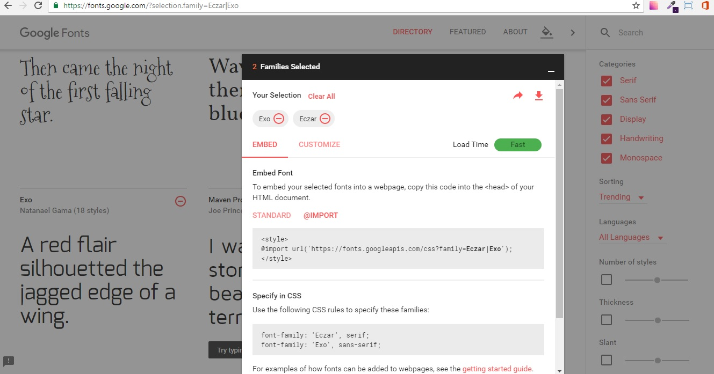
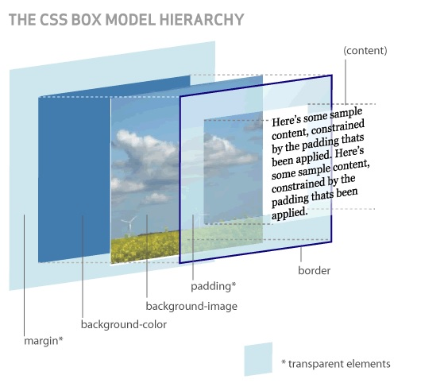

This CSS Reference shows the basic syntax of a CSS rule; lists all standard CSS properties, pseudo-classes and pseudo-elements, @-rules, units, and selectors, all together in alphabetical order, as well as just the selectors by type; and allows you to quickly access detailed information for each of them. It not only lists the CSS 1 and CSS 2.1 properties, but also is a CSS3 reference that links to any CSS3 property and concept standardized, or already stabilized. Also included is a brief DOM-CSS / CSSOM reference.
font
@font-face
The font-family CSS property lets you specify a prioritized list of font family names and/or generic family names for the selected element. Values are separated by a comma to indicate that they are alternatives. The browser will select the first font on the list that is installed on the computer or that can be downloaded using a @font-face at-rule.
Source can be charged in 3 ways:
@export
In this way I recommend you to go to page ..... Here you will find a list of types of sources and you eligas add your preferred and will get a window where the choice is saved, and there in that window will appear the famila selected, the next image shows the window.
In the section embed here to copy the line at the beginning has @export and already it is being exported selected source, for use in our CSS document with the font-family the load in the desired selector.
Locally
In this way downloads to your local the desired font and font family in the src property is housed indicate where your source, and use it where you need. the other way is that the url you pass the location on the web.
@font-face {
font-family: myFond;
font-style: bold;
font-weight: 400;
src: url("fonts/HomemadeApple.ttf") format('woff2');
}
@font-face {
font-family: 'Pacifico';
font-style: normal;
font-weight: 400;
src: local('Pacifico Regular'), local('Pacifico-Regular'), url(https://fonts.gstatic.com/s/pacifico/v7/Q_Z9mv4hySLTMoMjnk_rCfesZW2xOQ-xsNqO47m55DA.woff2) format('woff2');
}
Other properties
font-size: to specify the font size
font-style: to specify the font style
font-weight: to specify the font weight
font-family: to specify the font family
Box Model
The box model is probably the most important feature of the language of CSS style sheets, because it affects the design of all web pages. The box model is the behavior of CSS that makes all page elements are represented by rectangular boxes.
Boxes on a page are automatically created. Each time an HTML tag is inserted, a new rectangular box enclosing the contents of that item is created.
Boxes pages are not visible to the naked eye because initially show no background color or any edge.
Browsers create and place the boxes automatically, but CSS lets you modify all its features. Each of the boxes is made up of six parts, as shown in the following image:
The component parts of each box and display order from the user point of view are the following:
-Content: This is the HTML element content (the words of a paragraph, an image, the text of a list of items, etc.)
-Filling: Optional existing gap between the content and the edge.
-Edge line which completely encloses the contents and filling.
-Background image: image displayed behind the content and filling space.
-Background color: color displayed behind the content and filling space.
-Margin: optional separation existing between the box and the rest of adjacent boxes.
The padding and margin are transparent, so that the space occupied by the fill color or background image shown (if set) and the space occupied by the margin color or background image shown in his element parent (if defined). If no parent element has defined a color or background image, color or background image of the page itself is displayed (if defined).
CSS to style leaves us nuetro document some things you can use the style, size and color.
In style we can define if we want something predefined by css or we do the style we need.
In the size we can use the words defined, px, em, percentages.
The color property sets the foreground color of an element's text content, and its decorations. It doesn't affect any other characteristic of the element; it should really be called text-color and would have been named so, save for historical reasons and its appearance in CSS Level 1.Note that the color value must be a uniform color, which may include a transparency value from CSS3 onwards. It can't be a gradient which is an image in CSS.
element { color: red }
element { color: #f00 }
element { color: #ff0000 }
element { color: rgb(255,0,0) }
element { color: rgb(100%, 0%, 0%) }
element { color: hsl(0, 100%, 50%) }
If you want to include an alpha channel in color to allow it to make translucent, you can use RGBA or HSLA colors, as follows:
element { color: rgba(255, 0, 0, 0.5) }
element { color: hsla(0, 100%, 50%, 0.5) }
Width: The width CSS property specifies the width of the content area of an element. The content area is inside the padding, border, and margin of the element. The min-width and max-width properties override width.
width: 300px;
width: 25em;
width: 75%;
Keyword values
width: 25em border-box;
width: 75% content-box;
width: max-content;
width: min-content;
width: available;
width: fit-content;
width: auto;
Global values
width: inherit;
width: initial;
width: unset;
height: The height CSS property specifies the height of the content area of an element. The content area is inside the padding, border, and margin of the element.,values are defined as the width.
Border
The border CSS property is a shorthand property for setting the individual border property values in a single place in the style sheet. border can be used to set the values for one or more of: border-width, border-style, border-color.
border: This property serves to define the border with a shorthand in which a single property can define: style, size and color..
border-top: .
border-radius: .
border-left: .
border-bottom: .
border-right: .
border-color: .